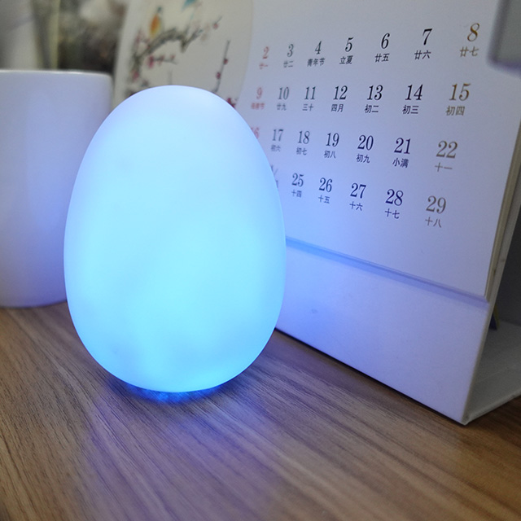
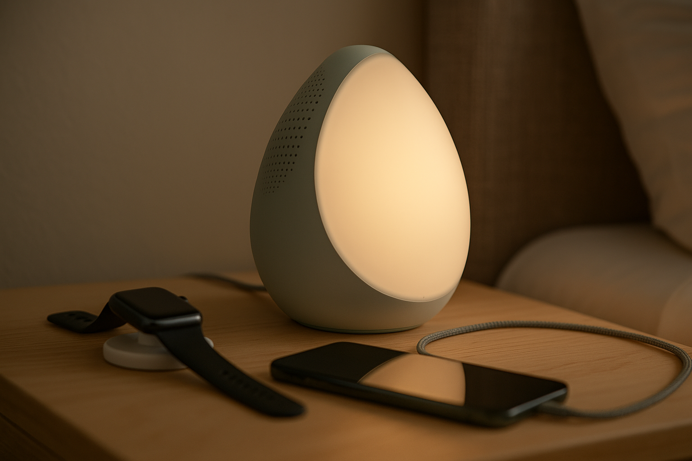

Naphome Development Plan — Phase I & Phase II
📸 Cover
Phase I Prototype — Little Egg
Complete evaluation & validation prototype
Form factor inspiration: J&R LED Night Light Silicone Egg Lamp
Phase II Concept — Big Egg
Production-ready & scalable design
🎯 Side-by-Side Comparison
| Phase I — Little Egg | Phase II — Big Egg |
|---|---|
|  |  |
| Complete evaluation & validation | Production-ready & scalable |
| ~$48.50 USD | ~$26 USD (battery DNP) / ~$28.50 USD (with battery) |
| Can order immediately | 12 weeks out |
| Premium audio (TAS5805M + 50mm driver) | Premium audio (TAS5805M + 50mm driver) |
| 4-microphone array | 2-microphone array (streamlined) |
| 8×8 RGBW LED matrix | 8×8 RGBW LED matrix + diffuser |
| 18650 battery backup | Optional (Premium) / DNP (Budget) |
| USB-C PD charging | USB-C PD charging |
| ESP32-S3 with full features | ESP32-S3 optimized |
| Full sensor suite (6 sensors) | Core sensors (2-3 sensors, TBD) |
| ✅ SHT45 (Temperature/Humidity) | ✅ SHT45 (if validated) |
| ✅ OPT3002/LTR-303 (Ambient Light) | ✅ OPT3002/LTR-303 (if validated) |
| ✅ SCD41 (CO₂) | ✅ SCD41 (if validated) |
| ✅ BME688 + SGP40 (VOC/Gas) | TBD based on pilot data |
| ✅ SPS30 (PM 2.5 external) | TBD based on pilot data |
| ✅ Sound Level (derived from mics) | TBD based on pilot data |
SKU Strategy
| SKU | Battery | BOM | Target Market |
|---|---|---|---|
| Budget | DNP | $26 | Price-sensitive consumers |
| Premium | 18650 Li-ion | $28.50 | Full-feature users |
| Evaluation | 18650 Li-ion | $48.50 | Development & testing |
🌙 Project Vision
Naphome is a smart sleep companion that combines premium bedside audio with adaptive circadian lighting to create the perfect sleep environment.
Focused on core sleep needs rather than feature complexity, it delivers proven functionality with elegant simplicity.
🧩 Phase Overview
| Phase | Description | Objectives |
|---|---|---|
| Phase I — Dual Architecture Pilot | "Little Egg" form factor; dual audio configurations + full sensor array to evaluate optimal design approach. | Gather data on audio preferences, sensor utility, and user feedback to inform Phase II architecture decisions. |
| Phase II — Production Design | Refined architecture optimized for manufacturing. | Deliver production-grade performance with reduced BOM, improved assembly, and finalized enclosure tooling. |
🎯 Phase Goals Summary
| Priority | Goal | Description |
|---|---|---|
| 1️⃣ | Audio Architecture Validation | Evaluate 5V vs 12V PD audio configurations to determine optimal Phase II approach. |
| 2️⃣ | Sensor Validation | Pilot program to determine which sensors provide real user value. |
| 3️⃣ | Far Field Microphone Design | Evaluate 4-mic vs 2-mic array for optimal voice pickup and wake word detection. |
| 4️⃣ | Thermal Performance Evaluation | Monitor temperature profiles for 5V vs 12V configurations using thermal imaging. |
| 5️⃣ | Simplified Architecture | Single PCB design for cost optimization and reliability. |
| 6️⃣ | Market Validation | Prove product-market fit with data-driven sensor selection. |
1️⃣ Audio Performance - Dual Power Architecture
Phase I Audio Exploration Strategy
Purpose: Evaluate both 5V and 12V PD audio architectures to determine optimal Phase II approach.
Hardware Baseline - Dual Configuration
| Subsystem | 5V Configuration | 12V Configuration | Notes |
|---|---|---|---|
| Driver | 50mm Full-Range Driver (4 Ω) | 50mm Full-Range Driver (4 Ω) | Same driver, different tuning |
| Amplifier | TI TAS5805M (5V Class-D DSP) | TI TAS5805M (12V Class-D DSP) | Same chip, different power rails |
| Power Input | USB-C (5V 2A) | USB-C PD (12V 1.5A) / 5V fallback | Standard vs PD approach |
| Audio Power | 3–4 W clean output | 8–10 W clean output | Power level comparison |
| Acoustic Volume | 0.08 L net | 0.08 L net | Same enclosure design |
| Enclosure | Sealed design | Sealed design | Eliminates passive radiator complexity |
Evaluation Targets
| Metric | 5V Target | 12V Target | Evaluation Criteria |
|---|---|---|---|
| Freq Response (–6 dB) | 150 Hz – 18 kHz | 120 Hz – 20 kHz | Clarity vs extension |
| Max SPL @ 1 m | ≥ 80 dB | ≥ 88 dB | Adequate vs premium |
| THD @ 1 W | ≤ 1.0 % | ≤ 0.5 % | Natural vs pristine |
| Thermal Rise | < 50 °C | < 65 °C | Cool vs warm operation |
| Battery Runtime | 3–4 hours | 1.5–2 hours | Portability comparison |
| Charger Compatibility | Universal USB-C | 12V PD required | User convenience |
Phase I Evaluation Plan
Audio Testing Protocol: 1. A/B Testing: Direct comparison of 5V vs 12V configurations 2. User Preference: Blind listening tests with sleep sounds 3. Power Analysis: Battery life and thermal behavior measurement 4. Compatibility Testing: Charger compatibility and user experience 5. Cost Analysis: BOM impact of each configuration
DSP Tuning:
5V Configuration: - HPF 120 Hz (Q 0.7) - Low-shelf +2 dB @ 300 Hz - High-shelf −1 dB @ 6 kHz (Q 0.7) - Soft-knee limiter 3–4 W
12V Configuration: - HPF 100 Hz (Q 0.7) - Low-shelf +3 dB @ 200 Hz - High-shelf −1 dB @ 8 kHz (Q 0.7) - Soft-knee limiter 8–10 W
Phase II Decision Framework
Decision Criteria for Audio Architecture Selection:
| Metric | 5V Configuration Wins If: | 12V Configuration Wins If: |
|---|---|---|
| User Preference | >60% prefer 5V in blind listening tests | >60% prefer 12V in blind listening tests |
| Battery Life | 3+ hours runtime highly valued | 2+ hours runtime acceptable |
| Thermal Comfort | Cool operation (<50°C) preferred | Warm operation (<65°C) acceptable |
| Charger Convenience | Universal USB-C compatibility important | 12V PD requirement acceptable |
| Cost Sensitivity | $1+ BOM savings significant | Premium audio worth extra cost |
| Market Positioning | Environmental sensing focus | Audio performance focus |
Expected Phase II Outcomes:
Scenario A: 5V Architecture Selected - BOM Cost: $26.05 (lower cost) - Battery Runtime: 3-4 hours (better portability) - Charger Compatibility: Universal USB-C (user convenience) - Thermal Performance: Cool operation (user comfort) - Market Position: Environmental sleep optimization focus - Competitive Advantage: Portable + affordable + environmental sensing
Scenario B: 12V Architecture Selected - BOM Cost: $27.15 (premium positioning) - Battery Runtime: 1.5-2 hours (adequate portability) - Charger Compatibility: 12V PD required (premium experience) - Thermal Performance: Warm operation (acceptable trade-off) - Market Position: Premium audio + environmental sensing - Competitive Advantage: Superior audio + environmental sensing
Risk Mitigation Benefits: 1. Data-Driven Decisions: No assumptions about user preferences 2. Market Validation: Real user feedback on audio preferences 3. Cost Optimization: Choose most cost-effective approach 4. Competitive Intelligence: Understand what users actually value 5. Technical Validation: Prove both architectures work in production
Critical Review: Pilot Approach Analysis
✅ Strengths of Pilot-First Design Philosophy
Risk Mitigation Excellence: - Audio Architecture Uncertainty: Dual 5V/12V testing eliminates guesswork - Sensor Value Validation: 6-sensor pilot determines real user value - Market Demand Proof: Real user feedback before production commitment - Technical Feasibility: Proves both architectures work in production - Cost Optimization: Data-driven BOM decisions
Competitive Intelligence: - User Preference Data: Blind testing reveals actual audio preferences - Feature Prioritization: Which sensors users actually value - Price Sensitivity: Real willingness to pay for features - Use Case Validation: How users actually use the device - Market Positioning: Evidence-based differentiation strategy
Technical Validation: - Thermal Performance: Real-world thermal behavior measurement - Battery Life: Actual runtime under various conditions - Audio Quality: Subjective and objective audio assessment - Manufacturing Feasibility: Production process validation - Component Reliability: Long-term performance data
🚨 Critical Concerns with Pilot Approach
Timeline and Resource Risk: - Extended Development: 8-10 weeks for Phase I + 6 weeks for Phase II = 16+ weeks - Resource Allocation: Dual architecture development doubles engineering effort - Market Timing: Competitors may launch similar products during pilot phase - Cost Overrun: Pilot complexity may exceed budget expectations - Decision Paralysis: Too much data may delay critical decisions
Pilot Design Complexity: - Dual Architecture Overhead: Supporting both 5V and 12V configurations - PCB Complexity: More complex board design for dual configurations - Firmware Complexity: Two audio paths and power management systems - Testing Complexity: Comprehensive A/B testing protocol - Manufacturing Complexity: More components and assembly steps
Market Validation Limitations: - Sample Size: 100 pilot units may not represent broader market - User Bias: Early adopters may not represent mainstream users - Feature Creep: Pilot users may request features not viable for mass market - Price Sensitivity: Pilot users may be less price-sensitive than mainstream - Use Case Bias: Pilot users may use device differently than intended
🔧 Recommended Pilot Approach Refinements
Simplified Dual Architecture:
Current: Full dual architecture with separate power systems
Recommended: Single PCB with configurable power rails
- 5V/12V switching via jumper or firmware
- Same amplifier chip, different power supply
- Reduced PCB complexity and cost
- Faster development and testing
Focused Sensor Validation:
Current: 6 sensors for comprehensive evaluation
Recommended: 3 core sensors + 2 optional sensors
- Core: T/H, Light, CO₂ (likely keepers)
- Optional: VOC, PM2.5 (evaluate for Phase II)
- Faster sensor validation
- Clearer decision criteria
Accelerated Timeline:
Current: 8-10 weeks Phase I + 6 weeks Phase II = 16+ weeks
Recommended: 6 weeks Phase I + 4 weeks Phase II = 10 weeks
- Parallel development of both architectures
- Focused testing protocol
- Faster decision making
- Reduced market timing risk
2️⃣ Far Field Microphone Design
Phase I Microphone Array Evaluation
Hardware Baseline: - 4-Microphone Array: Full 360° coverage with beamforming capabilities - 2-Microphone Array: Simplified directional pickup with noise cancellation - Wake Word Detection: ESP32-S3 integrated processing vs cloud-based
Evaluation Criteria
| Metric | 4-Mic Array | 2-Mic Array | Success Threshold |
|---|---|---|---|
| Wake Word Accuracy | >95% @ 3m | >90% @ 3m | >90% for production |
| Noise Rejection | >15dB SNR | >10dB SNR | >10dB for bedroom use |
| Power Consumption | ~50mW | ~25mW | <30mW for battery life |
| BOM Cost | $4.40 | $2.20 | <$3.00 for budget SKU |
| Processing Load | High (beamforming) | Low (simple filtering) | <20% CPU usage |
Phase I Evaluation Plan
Week 1-2: Baseline Testing - Deploy both configurations in test bedrooms - Measure wake word detection accuracy at various distances - Test noise rejection with common bedroom sounds (AC, fan, traffic)
Week 3-4: User Experience Testing - Real-world usage scenarios (sleepy voice, pillow muffling) - Multiple user testing (different voice characteristics) - Background noise tolerance testing
Week 5-6: Performance Analysis - Power consumption measurement during active listening - Processing load analysis on ESP32-S3 - Cost-benefit analysis for Phase II
Phase II Decision Framework
Keep 4-Mic Array If: - Wake word accuracy >95% at 3+ meters - Users report significantly better voice recognition - Premium market positioning justifies cost - Processing power sufficient for beamforming
Switch to 2-Mic Array If: - 2-mic performance meets 90% accuracy threshold - Cost reduction critical for market competitiveness - Power consumption impacts battery life significantly - Processing load affects other system performance
Technical Considerations: - Beamforming: 4-mic enables spatial filtering for better noise rejection - Directionality: 2-mic provides basic directional pickup - Processing: ESP32-S3 has sufficient power for 2-mic, may struggle with 4-mic beamforming - Cost Impact: 4-mic adds $2.20 to BOM, significant for budget positioning
4️⃣ Thermal Performance Evaluation
Phase I Thermal Monitoring Program
Objective: Evaluate thermal performance of 5V vs 12V configurations to ensure safe operation and optimal component placement.
Thermal Monitoring Equipment
| Equipment | Purpose | Specifications |
|---|---|---|
| Thermal Camera | Real-time thermal imaging | FLIR or similar, 320×240 resolution |
| Thermal Probes | Point temperature measurement | K-type thermocouples, ±1°C accuracy |
| Data Logger | Continuous temperature recording | 8-channel, 1Hz sampling rate |
| Environmental Chamber | Controlled ambient conditions | 20-40°C, ±2°C stability |
Thermal Test Points
| Component | Location | Critical Temperature | Monitoring Method |
|---|---|---|---|
| TAS5805M Amplifier | Center-left PCB | <85°C (operating) | Thermal camera + probe |
| ESP32-S3 MCU | Center-right PCB | <85°C (operating) | Thermal camera + probe |
| PD Controller | Bottom PCB | <100°C (operating) | Thermal camera + probe |
| Power Rails | Bottom PCB | <70°C (ambient +20°C) | Thermal camera |
| Battery | Behind PCB | <60°C (charging) | Thermal camera + probe |
| Enclosure Surface | External | <50°C (user contact) | Thermal camera |
Thermal Test Scenarios
Test 1: Idle Operation - Duration: 2 hours - Conditions: 25°C ambient, no audio output - Measurements: Baseline thermal profile
Test 2: Continuous Audio (5V Config) - Duration: 4 hours - Conditions: 25°C ambient, 3W continuous output - Measurements: Thermal steady-state
Test 3: Continuous Audio (12V Config) - Duration: 4 hours - Conditions: 25°C ambient, 8W continuous output - Measurements: Thermal steady-state
Test 4: Thermal Stress Test - Duration: 2 hours - Conditions: 35°C ambient, maximum audio output - Measurements: Worst-case thermal performance
Test 5: Enclosure Thermal Coupling - Duration: 3 hours - Conditions: 25°C ambient, various audio levels - Measurements: External surface temperatures
Thermal Performance Criteria
| Metric | 5V Configuration | 12V Configuration | Acceptance Criteria |
|---|---|---|---|
| Amp Junction Temp | <70°C | <80°C | <85°C (safety margin) |
| MCU Junction Temp | <60°C | <65°C | <85°C (safety margin) |
| Enclosure Surface | <40°C | <45°C | <50°C (user comfort) |
| Battery Temp | <45°C | <50°C | <60°C (charging safety) |
| Thermal Rise | <15°C | <20°C | <25°C (ambient +25°C) |
Thermal Imaging Analysis
Key Areas to Monitor: - Hot Spots: Identify components exceeding safe temperatures - Thermal Gradients: Map temperature distribution across PCB - Heat Sink Effectiveness: Evaluate thermal management solutions - Airflow Impact: Measure thermal performance with/without ventilation
Thermal Camera Settings: - Temperature Range: 20-100°C - Emissivity: 0.95 (typical for electronics) - Focus: Macro lens for component-level detail - Recording: Time-lapse for thermal transient analysis
Phase II Thermal Decision Framework
Keep 12V Configuration If: - All components stay within safe operating temperatures - Enclosure surface temperature <50°C for user comfort - Thermal performance acceptable for 8+ hour operation - Heat management solutions cost-effective
Switch to 5V Configuration If: - 12V configuration causes thermal issues - Enclosure becomes too hot for bedside use - Thermal management adds significant cost/complexity - 5V performance meets user requirements
Thermal Management Solutions: - Heat Sinks: Add thermal pads to high-power components - Ventilation: Strategic airflow openings in enclosure - Thermal Interface: High-conductivity thermal pads - Component Spacing: Optimize layout for thermal isolation
Thermal Data Collection
Continuous Monitoring: - Duration: 8 hours per configuration - Sampling Rate: 1Hz for critical components - Data Points: Temperature, power consumption, ambient conditions - Analysis: Thermal steady-state, transient response, peak temperatures
Documentation: - Thermal Images: Time-stamped thermal camera captures - Temperature Logs: Continuous data logging with timestamps - Test Reports: Detailed analysis of thermal performance - Recommendations: Thermal management improvements for Phase II
5️⃣ Sensor Validation Program
Phase I — Pilot Program (Sensor Evaluation)
Purpose: Populate all candidate sensors to determine which ones provide real user value for sleep optimization.
| Function | Phase I (Populate) | Evaluation Criteria | Phase II Decision |
|---|---|---|---|
| Temperature / Humidity | ✅ SHT45 | Sleep comfort correlation | TBD based on data |
| Ambient Light | ✅ OPT3002 / LTR-303 | Circadian lighting effectiveness | TBD based on data |
| CO₂ | ✅ SCD41 | Air quality impact on sleep | TBD based on data |
| VOC / Gas | ✅ BME688 + SGP40 | Air quality vs complexity trade-off | TBD based on data |
| PM 2.5 | ✅ SPS30 (external) | Integration feasibility | TBD based on data |
| Sound Level | ✅ Derived from mics | Sleep environment monitoring | TBD based on data |
Phase II — Production Decision
Outcome: Based on Phase I pilot data, select 2-3 core sensors that demonstrate clear user value and sleep improvement correlation.
Bus & Architecture: Shared I²C (3.3V) + pull-ups; flexible sensor array for evaluation.
Firmware: Comprehensive data logging and user feedback collection for sensor validation.
6️⃣ PCB Design & Architecture
Connectorized Single PCB Design
Design Philosophy: Single PCB with connectorized components for manufacturing efficiency, serviceability, and EMI control.
PCB Layout Strategy - Vertical Orientation
PCB Dimensions: 70mm (height) × 45mm (width) - Vertical orientation for LED matrix
PCB Component Layout
| Section | Components | Location | Connections |
|---|---|---|---|
| Audio I/O | Speaker, Microphone, LED Connectors | Top section | Audio and lighting |
| Audio Processing | TAS5805M Amplifier | Center-left | Speaker connector |
| Digital Processing | ESP32-S3 MCU | Center-right | All digital I/O |
| Power Management | USB-C, PD Controller, 5V/12V/3.3V Rails | Bottom section | Power input and distribution |
| External I/O | Grove, Battery Connectors | Bottom section | External components |
PCB Layout Diagram
@startuml
!theme plain
skinparam backgroundColor #FFFFFF
skinparam rectangle {
BackgroundColor #F0F8FF
BorderColor #4682B4
}
rectangle "PCB Layout - 70mm × 45mm (Vertical)" {
rectangle "TOP SECTION" as top {
rectangle "Speaker Connector\nJST PH-4" as spk_conn
rectangle "Microphone Connector\nJST PH-6" as mic_conn
}
rectangle "CENTER SECTION" as center {
rectangle "LEFT" as left {
rectangle "TAS5805M\nAmplifier" as amp
rectangle "Audio Filtering" as filter
}
rectangle "RIGHT" as right {
rectangle "ESP32-S3\nMCU" as mcu
rectangle "I2C Pull-ups" as pullups
}
}
rectangle "SENSOR SECTION" as sensors {
rectangle "SHT45\nT/H Sensor" as sht45
rectangle "OPT3002\nLight Sensor" as light
rectangle "SCD41\nCO₂ Sensor" as co2
rectangle "BME688\nVOC Sensor" as voc
rectangle "SGP40\nVOC Alt" as sgp40
rectangle "Sound Level\nDerived" as sound
}
rectangle "BOTTOM SECTION" as bottom {
rectangle "USB-C Connector" as usb
rectangle "PD Controller\nCH224K/IP2721" as pd
rectangle "5V/12V/3.3V Rails" as rails
rectangle "Grove Connector\nI2C" as grove_conn
rectangle "Battery Connector\nJST PH-2" as bat_conn
}
rectangle "BACK SECTION" as back {
rectangle "LED Matrix\n8x8 RGBW" as led_matrix
rectangle "LED Driver\nIS31FL3731" as led_driver
rectangle "LED Connector\nJST PH-8" as led_conn
}
rectangle "SIDE EDGES" as sides {
rectangle "Sensor Mounting\nPoints" as sensor_mount
rectangle "Ground Vias\nEMI Shielding" as vias
}
}
' Power connections
usb --> pd
pd --> rails
rails --> amp
rails --> mcu
' Audio connections
amp --> spk_conn
mic_conn --> mcu
' Digital connections
mcu --> led_driver
led_driver --> led_matrix
mcu --> sht45
mcu --> light
mcu --> co2
mcu --> voc
mcu --> sgp40
mcu --> sound
mcu --> grove_conn
' Power connections
rails --> bat_conn
note top of top : Audio connections
note top of center : Audio and digital processing
note top of sensors : Environmental sensing
note top of bottom : Power input and external connectors
note top of back : LED matrix for 360° diffusion
note right of sides : EMI mitigation and mounting
@enduml
Power Distribution Network
@startuml
!theme plain
skinparam backgroundColor #FFFFFF
skinparam componentStyle rectangle
package "Power Input" {
[USB-C Input] as USB
}
package "Power Management" {
[PD Controller\nCH224K/IP2721] as PD
[5V Rail] as V5
[12V Rail] as V12
[3.3V Regulator] as V33
}
package "Audio System" {
[TAS5805M\nClass-D Amp] as AMP
[Speaker\nTEBM35C10-4] as SPK
}
package "Digital System" {
[ESP32-S3\nMCU] as MCU
[LED Matrix\nIS31FL3731] as LED
[Sensors\nI2C Bus] as SENS
}
USB --> PD
PD --> V5
V5 --> V12
V5 --> V33
V12 --> AMP
V33 --> MCU
V33 --> LED
V33 --> SENS
AMP --> SPK
note right of V12 : 8-10W for premium audio
note right of V33 : 3.3V for digital systems
note right of AMP : Dual power config\nPhase I evaluation
@enduml
Signal Routing
- Audio Signals: TAS5805M → Speaker Connector (shielded)
- Digital Audio: Microphone Connector → ESP32-S3 (I2S)
- LED Control: ESP32-S3 → LED Connector (SPI)
- Sensor Data: ESP32-S3 → Sensor Connector (I2C)
- Expansion: ESP32-S3 → Grove Connector (I2C)
- Power: Battery Connector → Power Management
Sensor Architecture & Placement
Phase I Sensor Suite (All Populated)
| Sensor | Part Number | Mounting | Connection | Location | Purpose |
|---|---|---|---|---|---|
| Temperature/Humidity | SHT45 | On PCB | Direct I2C | PCB center | Sleep comfort monitoring |
| Ambient Light | OPT3002 | On PCB | Direct I2C | PCB front edge | Circadian lighting control |
| CO₂ | SCD41 | On PCB | Direct I2C | PCB side edge | Air quality monitoring |
| VOC/Gas | BME688 | On PCB | Direct I2C | PCB side edge | Air quality assessment |
| VOC/Gas (Alt) | SGP40 | On PCB | Direct I2C | PCB side edge | Air quality assessment |
| PM 2.5 | SPS30 | External module | Cabled I2C | Grove connector | Air quality monitoring |
| Sound Level | Derived from mics | N/A | Software | Microphone array | Sleep environment |
Phase II Sensor Selection (TBD Based on Pilot Data)
| Sensor | Keep If | Remove If | Cost (10k pcs) |
|---|---|---|---|
| Temperature/Humidity | >70% find useful | <50% find useful | $1.20 |
| Ambient Light | >70% find useful | <50% find useful | $0.80 |
| CO₂ | >60% find useful | <40% find useful | $2.50 |
| VOC/Gas | >50% find useful | <30% find useful | $1.80 |
| PM 2.5 | >40% find useful | <20% find useful | $1.20 |
| Sound Level | >30% find useful | <20% find useful | $0.00 |
Sensor Utility Measurement Methodology
User Feedback Collection
Direct User Feedback: - Weekly Surveys: 5-minute surveys about sensor usefulness - Feature Usage Tracking: Which sensor data users actually view - Sleep Correlation: Do users report better sleep with sensor insights? - Action Taking: Do users change behavior based on sensor data?
Quantitative Metrics: - App Engagement: Time spent viewing sensor data - Feature Usage: Frequency of sensor data access - Alert Response: Do users act on sensor alerts? - Data Sharing: Do users share sensor insights?
Sensor Utility Criteria
| Sensor | Primary Metric | Secondary Metrics | Success Threshold |
|---|---|---|---|
| Temperature/Humidity | Sleep quality correlation | Comfort alerts acted upon | >70% report sleep improvement |
| Ambient Light | Circadian lighting effectiveness | Manual light adjustments | >70% prefer auto lighting |
| CO₂ | Air quality awareness | Ventilation behavior change | >60% take action on high CO₂ |
| VOC/Gas | Air quality insights | Air purifier usage correlation | >50% find air quality data useful |
| PM 2.5 | Health awareness | Air quality behavior change | >40% check PM2.5 regularly |
| Sound Level | Sleep environment awareness | Noise reduction actions | >30% use sound level data |
Data Collection Strategy
Phase I Pilot (8-10 weeks): - Week 1-2: Baseline data collection - Week 3-4: Feature introduction and education - Week 5-8: Active usage and feedback collection - Week 9-10: Final assessment and decision making
Data Points Collected: - Daily: Sensor readings, user interactions, sleep quality - Weekly: User surveys, feature usage statistics - Monthly: Sleep quality correlation analysis - End of Pilot: Comprehensive sensor utility assessment
User Experience Metrics
Engagement Metrics: - Sensor Data Views: How often users check each sensor - Alert Responses: Do users act on sensor alerts? - Feature Discovery: Which sensors do users find first? - Retention: Do users continue using sensor features?
Behavioral Metrics: - Sleep Quality: Self-reported sleep improvement - Environmental Changes: Do users modify their environment? - Habit Formation: Do users develop sensor-based routines? - Recommendation: Would users recommend the device?
Decision Framework
Sensor Keep Criteria: 1. User Engagement: >50% of users interact with sensor data 2. Sleep Correlation: Positive correlation with sleep quality 3. Behavioral Impact: Users change behavior based on data 4. Cost Justification: BOM cost vs user value
Sensor Remove Criteria: 1. Low Engagement: <30% of users interact with sensor data 2. No Correlation: No measurable impact on sleep quality 3. No Action: Users don't change behavior based on data 4. High Cost: BOM cost exceeds user value
Pilot Success Metrics
Overall Pilot Success: - User Satisfaction: >80% satisfied with device - Sleep Improvement: >60% report better sleep - Feature Usage: >70% use at least 3 sensor features - Recommendation: >70% would recommend to others
Sensor-Specific Success: - Core Sensors: T/H, Light, CO₂ must show clear value - Optional Sensors: VOC, PM2.5, Sound can be removed if low value - Cost Optimization: Remove sensors that don't justify BOM cost
Sensor PCB Layout
| PCB Section | Sensors | I2C Addresses | Power | Notes |
|---|---|---|---|---|
| Front Edge | OPT3002 (Light) | 0x44 | 3.3V | Light exposure |
| Center | SHT45 (T/H) | 0x70 | 3.3V | Primary sensor |
| Left Side | SCD41 (CO₂) | 0x62 | 3.3V | Air quality |
| Right Side | BME688/SGP40 (VOC) | 0x76/0x59 | 3.3V | Air quality |
| Grove Port | SPS30 (PM2.5) | 0x69 | 5V | External module |
I2C Bus Architecture
Primary I2C Bus (3.3V): - SDA: GPIO21 (ESP32-S3) - SCL: GPIO22 (ESP32-S3) - Pull-ups: 4.7kΩ to 3.3V - Devices: SHT45, OPT3002, SCD41, BME688/SGP40
Secondary I2C Bus (5V - Grove): - SDA: GPIO23 (ESP32-S3) - SCL: GPIO24 (ESP32-S3) - Pull-ups: 4.7kΩ to 5V - Devices: SPS30 (PM2.5), External modules
Sensor Placement Strategy
On-PCB Sensors (Direct I2C): - Advantages: Lower cost, better reliability, faster response - Disadvantages: Limited placement flexibility - Sensors: SHT45, OPT3002, SCD41, BME688/SGP40
External Sensors (Cabled I2C): - Advantages: Flexible placement, better airflow, modular - Disadvantages: Higher cost, connector complexity - Sensors: SPS30 (PM2.5), Future expansion modules
Airflow Considerations
| Sensor | Airflow Requirement | Placement Strategy |
|---|---|---|
| SHT45 | Moderate airflow | PCB center, away from heat sources |
| OPT3002 | Direct light exposure | PCB front edge, clear aperture |
| SCD41 | Good airflow | PCB side edge, vent access |
| BME688/SGP40 | Moderate airflow | PCB side edge, away from electronics |
| SPS30 | High airflow | External module, dedicated airflow path |
Vertical PCB with LED Matrix Integration
Housing Assembly Structure
| Layer | Component | Dimensions | Function |
|---|---|---|---|
| Front | LED Matrix (8×8 RGBW) | 32×32mm | User-facing display |
| Middle | Main PCB (Vertical) | 70×45mm | Core electronics |
| Back | Battery Compartment | 65×18mm | 18650 Li-ion battery |
Component Integration
| Component | Location | Connection | Purpose |
|---|---|---|---|
| LED Matrix | Front housing | JST PH 8-pin | RGBW display |
| Speaker | Side housing | JST PH 2-pin | Audio output |
| Microphones | Top housing | JST PH 4-pin | Voice input |
| Sensors | Side housing | JST PH 6-pin | Environmental data |
| Battery | Rear compartment | JST PH 2-pin | Power backup |
| Grove Port | Bottom housing | JST PH 4-pin | External expansion |
Housing & Battery Integration
Option A: Battery Behind PCB (Recommended)
| SKU Type | Battery | BOM Impact | Runtime | Use Case |
|---|---|---|---|---|
| Premium | 18650 Li-ion | +$2.50 | 3-4 hours (5V) / 1.5-2 hours (12V) | Portable sleep companion |
| Evaluation | 18650 Li-ion | +$2.50 | 2-3 hours | Development & testing |
Assembly Structure: - Front Layer: LED Matrix (8×8 RGBW) - User-facing display - Middle Layer: Main PCB (70×45mm) - Vertical orientation - Rear Layer: Battery Compartment - 18650 Li-ion battery - Side Components: Speaker, microphones, sensors via connectors
Option B: Battery DNP (Budget SKU)
| SKU Type | Battery | BOM Impact | Power | Use Case |
|---|---|---|---|---|
| Budget | DNP (AC only) | $0.00 | USB-C PD / 5V | Fixed bedside use |
Assembly Structure: - Front Layer: LED Matrix (8×8 RGBW) - User-facing display - Middle Layer: Main PCB (70×45mm) - Vertical orientation - Rear Layer: Empty compartment - DNP for cost savings - Side Components: Speaker, microphones, sensors via connectors
Connector Specifications
| Component | Connector | Pin Count | Wire Gauge | Length | Purpose |
|---|---|---|---|---|---|
| Speaker | JST PH 2-pin | 2 | 22 AWG | 50mm | Audio output |
| Microphone | JST PH 4-pin | 4 | 26 AWG | 30mm | I2S digital audio |
| LED Matrix | JST PH 8-pin | 8 | 26 AWG | 20mm | RGBW control |
| Sensors | JST PH 6-pin | 6 | 26 AWG | 25mm | I2C communication |
| Battery | JST PH 2-pin | 2 | 22 AWG | 40mm | Power connection |
| Grove I2C | JST PH 4-pin | 4 | 26 AWG | 15mm | External expansion |
EMI Mitigation Strategy
Ground Plane Architecture
- Analog Ground: Dedicated ground plane for audio and sensors
- Digital Ground: Separate ground plane for MCU and digital circuits
- Ground Stitching: Multiple vias connecting ground planes
- Ground Isolation: Ferrite beads between analog/digital grounds
Power Supply Isolation
- Ferrite Beads: On all power rails entering analog sections
- LC Filters: Low-pass filters on power supplies
- Decoupling: Multiple capacitors near each IC
- Power Plane Separation: Dedicated power planes for analog/digital
Component Placement
- Physical Separation: Maximum distance between audio and digital sections
- Shielding: Metal cans over TAS5805M and ESP32-S3
- Trace Routing: Careful routing to minimize coupling
- Via Stitching: Multiple vias around sensitive areas
PCB Stackup (4-Layer)
| Layer | Function | Thickness | Material |
|---|---|---|---|
| L1 | Signal + Components | 0.1mm | FR4 |
| L2 | Ground Plane | 0.2mm | FR4 |
| L3 | Power Planes | 0.2mm | FR4 |
| L4 | Signal + Components | 0.1mm | FR4 |
Connector vs Soldering Analysis
| Aspect | Connectors | Soldering | Recommendation |
|---|---|---|---|
| Manufacturing | Faster assembly | Slower assembly | ✅ Connectors |
| Serviceability | Easy replacement | Difficult repair | ✅ Connectors |
| Quality Control | Easy testing | Harder to test | ✅ Connectors |
| Yield | Higher yield | Lower yield | ✅ Connectors |
| Cost | Slightly higher | Lower component cost | ⚖️ Trade-off |
| Reliability | Good with proper connectors | Excellent if done well | ⚖️ Trade-off |
| EMI | Better control | Harder to control | ✅ Connectors |
Manufacturing Benefits
Assembly Efficiency
- Faster Assembly: Connectors are faster than soldering
- Automated Assembly: Connectors can be automated
- Quality Control: Easy to test each connection
- Higher Yield: Fewer assembly defects
Serviceability
- Easy Replacement: Components can be replaced without rework
- Field Service: Easier to service in the field
- Upgrade Path: Components can be upgraded
- Repair: Faster and cheaper repairs
EMI Control
- Shielded Cables: Can use shielded cables for sensitive signals
- Ground Control: Better ground control with connectors
- Signal Integrity: Better signal integrity with proper connectors
- EMI Shielding: Can add EMI shielding to connectors
Testing Strategy
| Test Type | Method | Purpose |
|---|---|---|
| PD Negotiation | USB-C PD tester | Verify power delivery |
| Audio Sweep | Audio analyzer | Validate audio performance |
| Sensor Enumeration | I2C scanner | Verify sensor communication |
| Firmware OTA | Wireless update | Test update mechanism |
| EMI Testing | EMC chamber | Validate EMI performance |
| Connector Testing | Continuity tester | Verify all connections |
4️⃣ Airflow Design & Validation
Concept:
360° base gap feeding a passive diffusion plenum isolated from the speaker cavity.
Separate plenum for T/H, VOC, and CO₂ sensors; external PM sensor.
| Sensor | Placement |
|---|---|
| T/RH | Plenum air path ~10 mm from warm zones |
| VOC | Same plenum, light-shielded |
| CO₂ | Side vent pocket ≥ 7 mm Z-clearance |
| Light | Front aperture with baffle |
| PM 2.5 | External Grove module |
Targets
| Metric | Requirement |
|---|---|
| T/RH t₆₃ | ≤ 45 s ( t₉₀ ≤ 90 s ) |
| VOC t₆₃ | ≤ 30 s ( t₉₀ ≤ 60 s ) |
| CO₂ t₆₃ | ≤ 60 s ( t₉₀ ≤ 120 s ) |
| Drift under draft | < ± 3 % |
| Audio coupling | < ± 2 % T/RH shift or < ± 50 ppm CO₂ |
5️⃣ LED Matrix & Lighting
| Feature | Phase I | Phase II |
|---|---|---|
| Type | 8×8 RGBW (IS31FL3731) | Same matrix + integrated diffuser |
| Purpose | Sleep & ambient light scenes | Branded visual identity |
| Integration | Surface mount + diffuser plate | Molded optic |
| Goal | Tune diffusion & animation patterns | Finalize lighting profiles |
| DNP Option | N/A | Can DNP if using window design instead of LED matrix |
6️⃣ BOM Summary (10 k pcs estimate)
| Subsystem | Phase I (Dual Config) | Phase II (5V) | Phase II (12V) | Notes |
|---|---|---|---|---|
| Power & Regulation | $2.40 | $0.85 | $1.20 | Dual config vs optimized |
| Battery & Charging | $2.50 | $0.00 | $0.00 | DNP option in Phase II |
| Amp & Audio | $3.20 | $2.20 | $2.80 | 5V vs 12V configuration |
| Speaker | $4.00 | $3.50 | $3.50 | Same driver, volume discount |
| MCU (ESP32-S3) | $3.20 | $2.70 | $2.70 | Module vs SoC |
| Mics & AFE | $4.40 | $2.20 | $2.20 | 4 → 2 mics |
| Sensors | $13.50 | $4.50 | $4.50 | Select core set |
| LED Matrix + Driver | $3.60 | $2.40 | $2.40 | Integrated diffuser |
| PCB + Conn | $4.20 | $2.60 | $2.60 | Dual config complexity |
| Enclosure & Hardware | $3.00 | $2.50 | $2.50 | Mold cost spread |
| Assembly & Test | $3.00 | $1.80 | $1.80 | Dual config complexity |
| Packaging | $1.00 | $0.80 | $0.80 | Standard kit |
| TOTAL | $48.00 | $26.05 | $27.15 | Phase II options |
Battery Options
| Feature | Phase I (Dual Config) | Phase II (5V) | Phase II (12V) |
|---|---|---|---|
| Battery | 18650 Li-ion (2-3 hrs) | 18650 Li-ion (3-4 hrs) | 18650 Li-ion (1.5-2 hrs) |
| Charging | USB-C PD + Li-ion charger | USB-C + Li-ion charger | USB-C PD + Li-ion charger |
| Runtime | 2-3 hours backup | 3-4 hours backup | 1.5-2 hours backup |
| BOM Impact | +$2.50 | +$2.50 | +$2.50 |
| Use Case | Full evaluation | Portable + affordable | Portable + premium |
Phase II Architecture Decision Summary
| Decision Point | 5V Architecture | 12V Architecture |
|---|---|---|
| BOM Cost | $26.05 | $27.15 |
| Audio Power | 3-4W | 8-10W |
| Battery Runtime | 3-4 hours | 1.5-2 hours |
| Charger Compatibility | Universal USB-C | 12V PD required |
| Thermal Performance | Cool (<50°C) | Warm (<65°C) |
| Market Position | Affordable + Environmental | Premium + Environmental |
| Competitive Focus | Portability + Value | Audio Performance + Value |
Pilot Success Metrics & Decision Framework
Audio Architecture Decision Criteria
| Metric | 5V Wins If | 12V Wins If | Measurement Method |
|---|---|---|---|
| User Preference | >60% prefer 5V | >60% prefer 12V | Blind A/B testing (n=50) |
| Battery Life | 3+ hours valued | 2+ hours acceptable | User feedback + measurement |
| Thermal Comfort | Cool operation preferred | Warm operation acceptable | User comfort survey |
| Charger Convenience | Universal USB-C important | 12V PD acceptable | User experience survey |
| Cost Sensitivity | $1+ savings important | Premium worth extra cost | Price sensitivity analysis |
Sensor Validation Criteria
| Sensor | Keep If | Remove If | Measurement |
|---|---|---|---|
| T/H | >70% find useful | <50% find useful | User feedback + sleep correlation |
| Light | >70% find useful | <50% find useful | Circadian lighting effectiveness |
| CO₂ | >60% find useful | <40% find useful | Air quality impact on sleep |
| VOC | >50% find useful | <30% find useful | Air quality vs complexity |
| PM2.5 | >40% find useful | <20% find useful | Integration feasibility |
Final Recommendation: Refined Pilot Approach
Phase I: Focused Dual Architecture Pilot (6 weeks) 1. Simplified Dual Architecture: Single PCB with configurable power rails 2. Core Sensor Suite: 3 essential + 2 optional sensors 3. Accelerated Testing: Parallel development and testing 4. Clear Decision Criteria: Quantitative metrics for architecture selection 5. Market Validation: Real user feedback on key features
Phase II: Optimized Production Design (4 weeks) 1. Data-Driven Architecture: Based on pilot results 2. Validated Sensor Suite: Only sensors proven valuable 3. Optimized BOM: Cost-optimized based on pilot learnings 4. Production Ready: Manufacturing-optimized design
Expected Outcomes: - Reduced Risk: Data-driven decisions eliminate assumptions - Faster Time to Market: 10 weeks vs 16+ weeks - Lower Development Cost: Simplified pilot approach - Better Market Fit: Real user validation - Competitive Advantage: Evidence-based feature selection
Conclusion: The pilot approach is strategically sound but needs refinement to balance thoroughness with speed and cost. The recommended approach maintains the benefits of data-driven decision making while reducing complexity and timeline risk.
7️⃣ Timeline & Validation
| Phase | Duration | Key Outcomes |
|---|---|---|
| Phase I EVT | 8–10 weeks | Audio, sensor, and airflow validation |
| Phase I DVT | + 4 weeks | Firmware + enclosure fit |
| Phase II EVT | 6 weeks | DNP subset + mold validation |
| Phase II PVT | + 4–6 weeks | 1 000-unit pilot build and automated test |
✅ Success Criteria
| Domain | KPI |
|---|---|
| Audio | Outperforms Hatch Restore 3 in clarity & SPL |
| Sensors | ± 3 % repeatability vs reference bench |
| Airflow | Meets t₆₃ targets and drift limits |
| Thermal | Amp < 70 °C @ max load |
| Manufacturability | Connector alignment ± 0.15 mm max |
| App | Auto-EQ cycle < 10 s; sensor dashboard OK |
📋 Summary Table
| Aspect | Phase I | Phase II |
|---|---|---|
| Purpose | Validation and data collection | Production & scale |
| Population | All subsystems active | Streamlined set |
| Boards | Same PCBs shared | DNP reductions |
| Firmware | Common base | OTA ready |
| Deliverable | 100-unit evaluation batch | 10 k-unit production run |
🏆 Competitive Analysis
| Feature | Naphome | Hatch Restore 3 | Amazon Echo | Google Nest Hub | Philips SmartSleep |
|---|---|---|---|---|---|
| 🎵 Audio | 10W DSP + 50mm driver | Premium sound (undisclosed power) | Basic smart speaker | Basic smart speaker | Premium sound (undisclosed power) |
| 💡 Lighting | 8×8 RGBW matrix | Sunrise simulation LED | Basic status LED | Display + ambient | Sunrise simulation LED |
| 🌡️ Environmental Sensors | T/H, Light, CO₂ (pilot) | None | None | None | None |
| 📊 Sleep Tracking | None (environmental focus) | Built-in sleep tracking | None | None | Built-in sleep tracking |
| 🎤 Voice Control | ESP32-S3 + cloud | None | Alexa | Google Assistant | None |
| 🔋 Battery | Optional (2-3 hrs) | AC only | AC only | AC only | AC only |
| 📱 App Control | Custom sleep app | Hatch app | Alexa app | Google Home | Philips app |
| 💰 Price | $80-120 (est.) | $200 | $50-100 | $100-150 | $150-200 |
| 🎯 Primary Focus | Environmental sleep optimization | Sleep + wake routines | Smart home hub | Smart home hub | Sleep therapy |
| 📈 Unique Value | Real-time environment monitoring | Comprehensive sleep routines | Smart home integration | Display + smart home | Sleep coaching |
🎯 Competitive Advantages
| Advantage | Description | Market Impact |
|---|---|---|
| 🌡️ Environmental Intelligence | Only device with real-time T/H, Light, CO₂ monitoring | Unique sleep optimization approach |
| 🔋 Portable Sleep Companion | Optional battery backup for travel/camping | Only portable premium sleep device |
| 📊 Data-Driven Design | Pilot program validates which sensors provide real value | Evidence-based feature selection |
| 💰 Accessible Premium | $80-120 vs $150-200 for Hatch/Philips | Premium features at mid-market price |
| 🎯 Focused Purpose | Environmental sleep optimization vs. general smart home | Clear value proposition |
🚨 Competitive Challenges
| Challenge | Mitigation Strategy |
|---|---|
| 🏢 Brand Recognition | Focus on unique environmental intelligence value proposition |
| 📱 Ecosystem Integration | Open API for smart home compatibility + voice assistant integration |
| 🛒 Distribution | Direct-to-consumer + specialty sleep retailers + Amazon marketplace |
| 📈 Market Education | Clear messaging on environmental sleep optimization benefits |
| 🎯 Feature Validation | Pilot program proves sensor utility before production commitment |
End of Document